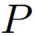
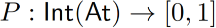
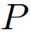
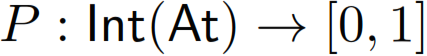
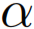
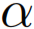
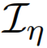
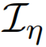

-inconsistency measure we need to consider probability functions  of the form  with
-inconsistency measure we need to consider probability functions  of the form  with  . Let
. Let  be the set of all those probability functions and for a given probability function
be the set of all those probability functions and for a given probability function  define the probability of an arbitrary formula  via
define the probability of an arbitrary formula  via  . The eta inconsistency measure  is then defined as
. The eta inconsistency measure  is then defined as